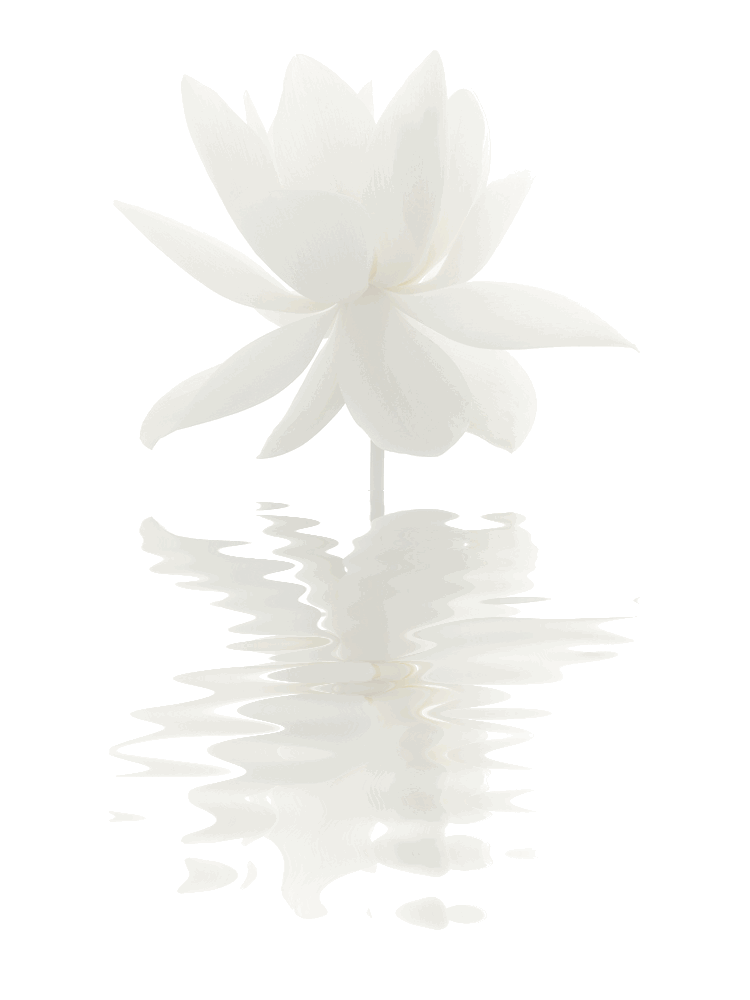

Dengarkan “Kiss the Rain,” sebuah lagu piano yang indah dari Yiruma, seorang komposer dan pianis terkenal dari Korea Selatan. Musik ini membawa pendengar ke dalam suasana yang tenang dan penuh perasaan, menggambarkan keindahan kesendirian dan momen refleksi.
Lagu "Kiss the Rain" tersedia diberbagai platform, termasuk Youtube dan Spotify. Tetapi, kamu bisa langsung mendengarkan lagu klasik yang indah ini langsung dari website Tarakanita Music Center. Selamat mendengar!
|
Klasik yang DicintaiKiss the Rain” adalah salah satu karya yang sangat disukai dan tak lekang oleh waktu. Melodinya yang menenangkan dan liriknya yang menyentuh membuat lagu ini cocok untuk didengarkan saat kita ingin berpikir, bersantai, atau melepas penat. Setiap nada terasa seperti kenangan yang indah, mengingatkan kita untuk berhenti sejenak dan menikmati hidup. |
|
Cocok Untuk Segala SuasanaBaik saat belajar, bersantai, atau ingin merenung, “Kiss the Rain” adalah pilihan yang tepat. Biarkan melodi lembutnya mengisi ruangan, menciptakan suasana damai yang membuat kita bisa lebih fokus dan tenang. Komposisi ini terbentang dengan anggun, dengan nada-nada lembut yang menari di atas tuts piano, menggugah citra tetesan hujan yang perlahan jatuh di atas pemandangan yang tenang. Gaya khas Yiruma menggabungkan melodi yang rumit dengan harmoni yang sederhana namun mendalam, menciptakan lanskap suara yang beresonansi dengan hati dan jiwa. |
 |